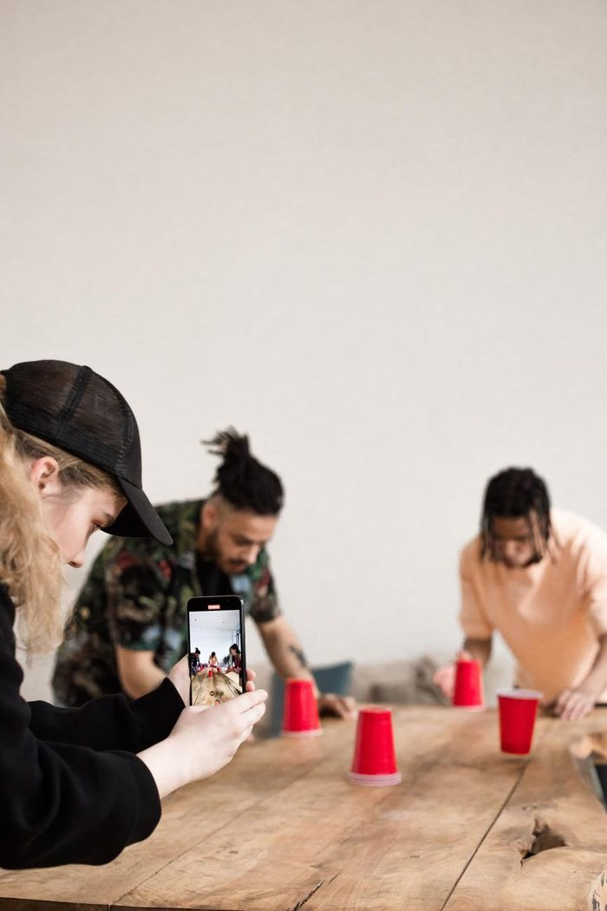

The adage states that if you’re good at something, you shouldn’t do it for free. You may believe that social media is a “free” service, but that is not entirely true. These platforms are some of the most profitable businesses worldwide, and their biggest selling point is the number of users on them, yourself included.
This edition of Money Talk looks at what you could make from social media companies, and what you need to qualify.
YouTube
Open to South AfricansYouTube is a social media juggernaut for global learning, entertainment and marketing. Success here can mean a sustainable living from being favourable and well received, and it can create greater opportunities for your business or brand as viewers become a hybrid of fans and paying clients.
South Africa is an eligible country for YouTube’s Partner Programme, which has two tiers:
| Tier 1 (fan funding) | Tier 2 (ads) | |
|---|---|---|
| Subscribers | 500 | 1,000 |
| Long-form | 3,000 watch hours (12 months) | 4,000 watch hours (12 months) |
| Shorts alternative | 3 million views (90 days) | 10 million views (90 days) |
| Unlocks | Memberships, Super Chat, Super Thanks, Shopping | Adds ad revenue and Premium revenue |
So what does it pay?
Be aware that because payments are made in dollars, conversion rates and income tax are hidden costs.
TikTok
17 million+ SA users
At present, TikTok does not provide per-view payments in South Africa. Despite the country having more than 17 million TikTok users, it is not yet eligible for the TikTok Creator Rewards Programme.
That is not expected to change soon. Still, eligible countries offer a model for what the requirements here might look like:
| Followers | 10,000 |
| Views | 100,000 in 30 days |
| Video length | At least one minute |
This is a prediction, not an official requirement.
South African creators are not necessarily barred from receiving payments from TikTok. They use these features instead:
- LIVE Gifts. You must be 18+ and typically need 1,000 followers, plus at least three posts with 1,000+ views in the past 30 days. Each Diamond is worth about $0.005, and the payout is roughly half the gift’s coin cost. One local source says PayPal is the only withdrawal method, but we couldn’t verify that independently.
- Effect Creator Rewards. The maximum is $14,000 per effect and $50,000 per creator, per month.
- Subscriptions, Video Gifts and Work With Artists. TikTok lists these as available to African creators.
Facebook and Instagram
South Africa is on Meta’s country list for Content Monetisation, which is invite-only, and Pages here can offer Subscriptions. Meta closed In-stream Ads, Ads on Reels and the Performance Bonus Programme on 31 August 2025.
There is no per-view payment, and South Africa isn’t named in Meta’s lists for gifts or bonuses. Instagram income here is essentially brand deals.
Brand deals
The biggest income for most SA creatorsThe most-cited local benchmark is the 2024 SA Influencer Report. It puts the average at R4,354 for a static post and R7,335 for a reel. By tier:
| Tier | Static | Reel | Story |
|---|---|---|---|
| Nano5k–10k followers | R2,101 | R3,229 | R1,198 |
| Micro10k–50k followers | R2,736 | R4,963 | R1,864 |
| Mid-macro50k–500k followers | R6,067 | R10,633 | R3,376 |
| Macro500k–1M followers | R9,604 | R18,096 | R6,406 |
Source: 2024 SA Influencer Report, as reported by Athlone News.
The bottom line
For South African creators, social media can pay, but the platform itself is rarely the main source of income. YouTube is the clearest route to direct earnings. It is open to South Africans, qualifying costs nothing beyond time and effort, and ad revenue is paid in dollars once the 1,000-subscriber and 4,000-watch-hour bar is met. Those rates are modest, with creators reporting roughly R9 to R54 per 1,000 views, well below what US or UK creators earn. The bar is also about to rise: from 1 February 2027, new applicants will need 8,000 watch hours or 20 million Shorts views, so anyone close to the current threshold has a short window to apply.
TikTok, despite its huge local audience, does not pay South Africans per view because its Creator Rewards Programme has not launched here. LIVE Gifts and Effect Creator Rewards are the main ways to earn on the platform itself. On Facebook and Instagram, direct payments are limited or by invitation only.
For most creators, the real money lies outside platform payouts. Brand partnerships, affiliate commissions, memberships and digital products pay more, and they depend on audience trust and engagement more than on raw view counts.
A South African creator should therefore treat platform monetisation as a bonus and build several income streams. Check each platform’s official requirements before planning around them, because the rules change often and, as the YouTube update shows, can change quickly.